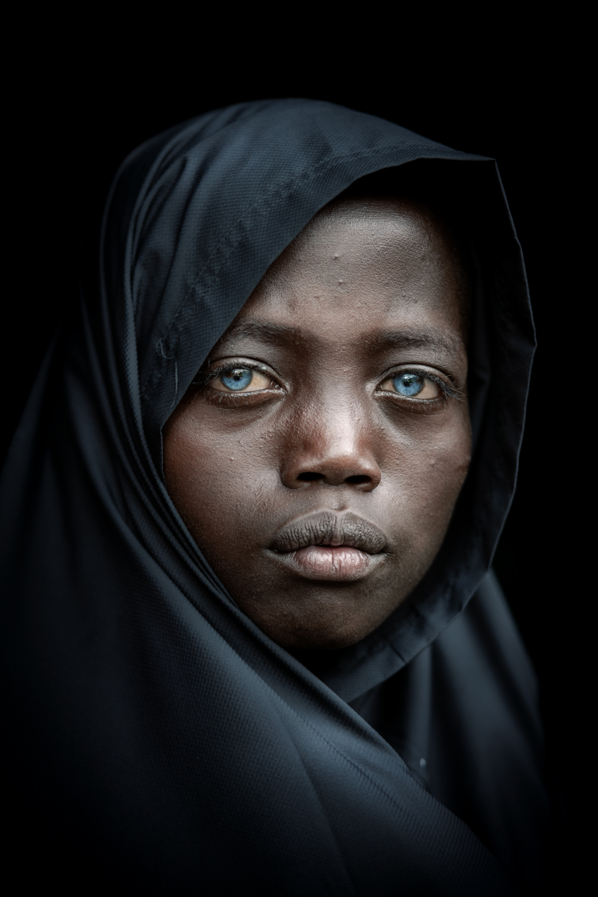

Bilgi Köşesi
Fotoğrafçılık Teknikleri
Portre Fotoğrafçılığı
Portre fotoğrafçılığı, insan yüzlerini ve duygularını yakalamayı hedefler. Doğru ışık, kompozisyon ve model yönlendirmesi portre fotoğrafının kalitesini belirler.
Ekipman Önerileri
En İyi Lensler
Lens seçimi, fotoğrafçının çekim tarzına, bütçesine ve hedeflediği kaliteye bağlıdır. Geniş açılı lensler manzara ve mimari fotoğrafçılığı için uygundur, telefoto lensler ise uzak nesneleri yakalamak için idealdir.
Faydalı İpuçları
Işık Kullanımı
Işık, fotoğrafın temel bileşenidir ve fotoğrafçının en önemli aracıdır. Işık kaynağına göre farklı gölgeler ve tonlar elde edilir. Yumuşak ışık portre fotoğrafları için tercih edilirken, güneş ışığı dramatik efektler için kullanılabilir.